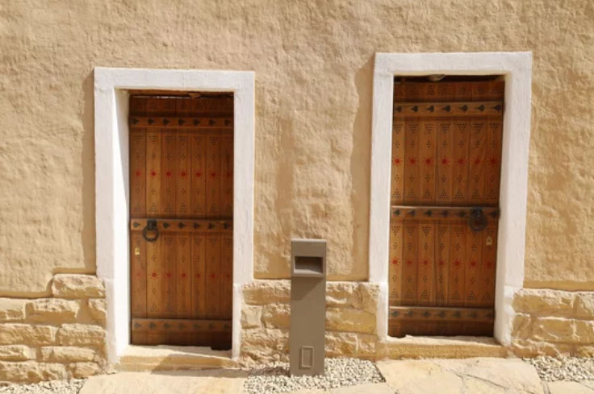
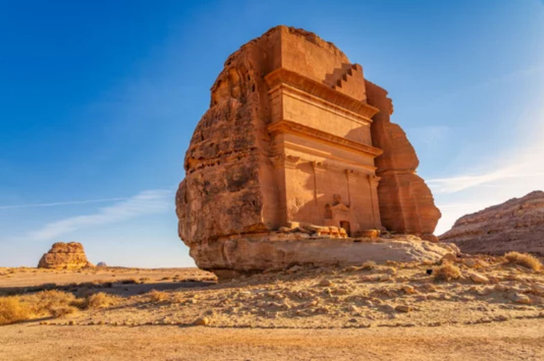
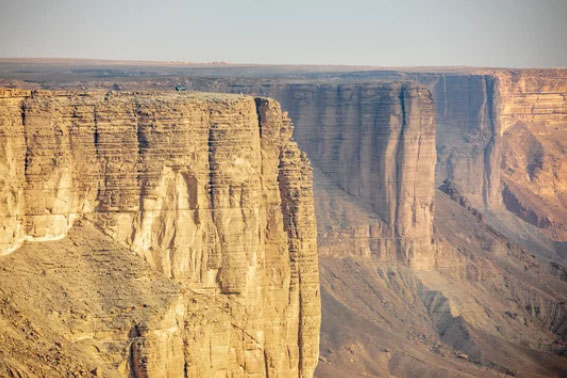
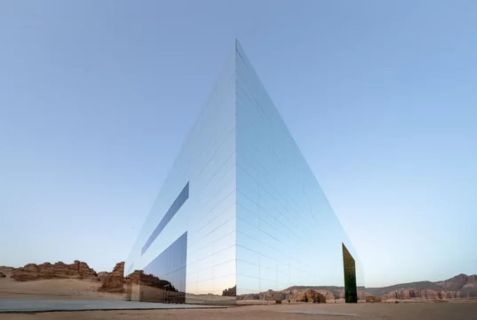
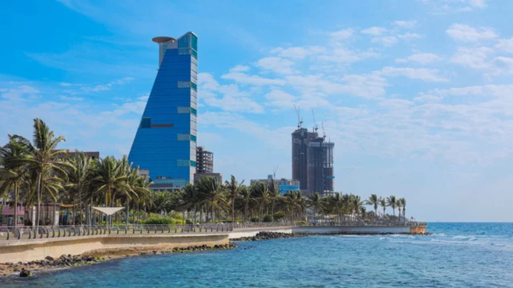
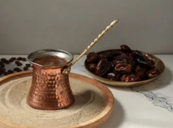
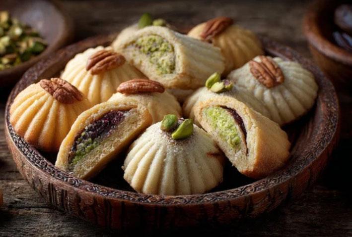

The Pearl of the Hejaz
Saudi Arabia: Unveil the Spirit of the Kingdom
From the ancient tombs of Hegra to the vibrant skyline of Riyadh, experience a fusion of timeless heritage, modern luxury, and breathtaking desert landscapes.
Royal Traditions & Beyond
Traverse the Kingdom
From the silent echoes of ancient wonders to the vibrant pulse of coastal cities, witness the majestic soul of Arabia in every horizon.

Hegra (Madain Salih)

The Edge of the World (Jabal Tuwaiq)

AlUla

Jeddah
An Anthology of Arabian Hospitality
A Caravan of Spices

Kabsa
The soul of the Saudi table. Fragrant basmati rice infused with a signature blend of spices, crowned with tender roasted meats for a true taste of togetherness.

Saudi Coffee & Dates
The timeless ritual of hospitality. Golden-hued Arabic coffee, aromatic with cardamom and saffron, paired with the natural sweetness of sun-ripened desert dates.

Maamoul
A delicate bite of heritage. Exquisitely patterned buttery shortbread cookies, filled with rich date paste or crushed nuts, celebrating centuries of festive tradition.
サウジアラビア王国の歴史
Kingdom of Saudi Arabia
A storied heritage rooted in the sands of time. The enduring legacy of the House of Saud, shaping a nation's destiny through generations. Together, tradition and vision forge a bright future.
古代
ディルムン文明 （紀元前3000年頃 - 紀元前2000年頃）
ペルシャ湾沿岸で栄えた交易文明で、サウジアラビア東部もその影響を受けました。
マイーン王国・サバ王国 （紀元前1000年頃 - 紀元前1世紀）
アラビア半島南部を中心に栄えた王国で、香料貿易を通じて北部にも影響を及ぼしました。
中世
イスラム帝国（正統カリフ時代・ウマイヤ朝・アッバース朝） （7世紀 - 13世紀）
イスラム教の発祥地として、メッカとメディナが宗教的・政治的中心地となりました。
ラスール朝やアイユーブ朝の影響 （13世紀）
アラビア半島南部や紅海沿岸地域での影響が見られました。
近世
オスマン帝国 （16世紀 - 20世紀初頭）
アラビア半島の大部分がオスマン帝国の宗主権下に入りましたが、中央部や南部では部族社会が独立性を保ちました。
近現代・現代
第一次サウード王国 （1744年 - 1818年）
1744年、リヤド近郊のディルイーヤを拠点にムハンマド・イブン・サウードが宗教指導者ムハンマド・イブン・アブドルワッハーブと盟約を結び、サウード王国の基礎を樹立。
第二次サウード王国 （1824年 - 1891年）
中央アラビアのナジュド地方を中心に再興されました。
第三次サウード王国（現在のサウジアラビア王国）（1902年 - 現在）
イブン・サウードがリヤドを奪還し、1926年にヒジャーズ地方を統一。1932年にサウジアラビア王国として正式に建国されました。
サウジアラビア王国 （1932年 - 現在）
石油の発見と輸出により急速に経済発展を遂げ、イスラム教の聖地を擁する国として国際的な影響力を持っています。 サウジアラビアは、古代から現代に至るまで、宗教的・経済的に重要な役割を果たしてきました。
19世紀中頃にサウード王家は一時アラビア半島の支配権を失ったが、1902年、同王家の血を引くアブドルアジーズが、リヤドの支配権をラシード家から奪還。アブドルアジーズは、その後も版図を広げ、1932年に現在のサウジアラビア王国の初代国王となった。